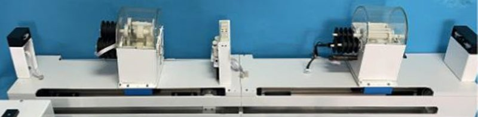

Academic bedside robots · yu_complexcoronary_2023
Multi-device PCI
Master-slave vascular interventional robot for complex coronary lesions (collaborative multi-instrument delivery, resistance-based haptics)

1 / 9


- Family
- Academic bedside robots (academic)
- Devices
- multiple interventional instruments delivered collaboratively
- Degrees of freedom
- N.R.
- Push
- Not reported
- Twist
- Not reported
- Tested up to
- Phantom
- Sim-to-real
- None found — No simulation-trained controller found for this robot.
Testing
- Highest level
- Phantom
- What was tested
- Series of bench experiments (abstract); full text Sec. 3.3: human vessel model, radial artery to aortic arch, 10 testers x 10 deliveries of a catheter and a guidewire with one guidewire exchange (W4_notes.md item 4)
- Key numbers
- N.R.
Mechanism
- Push (translation)
- N.R.
- Twist (rotation)
- N.R.
- Device range
- N.R.
- Target anatomy
- coronary complex lesions
Sensing and interface
- Force sensing
- Resistance measuring mechanism for delivery resistance
- Leader and haptics
- Active drag system generates haptic force; force-velocity mapping avoids vibration
- Imaging
- N.R.
- Sterility
- N.R.
Size
- Footprint (mm)
- N.R.
- Mass (kg)
- N.R.
Simulation
- Simulation model
- none found
- Sim-trained controller
- none found
Versions
- Lineage
- yu2023_design (MBEC 2023)
Sources
- Design and evaluation of vascular interventional robot system for complex coronary artery lesions · Medical & Biological Engineering & Computing, 2023 · doi:10.1007/s11517-023-02775-5 [yu2023_design]
Notes
- Notes
- Group must be identified from the PDF. | 2026-10-13 Q2: highest_validation bench -> phantom from the full text (W4_notes.md item 4); group from the full-text author list. The coordinator correction of 18:00 had been applied to yanshan_yu2023 by mistake (W6_notes.md item 9). Other cells left at abstract level so that Sec. V and VII counts stay as written (Sec. V-B names the full-text mechanism).
This record
- Read level
- abstract — abstract (Europe PMC)
- Picture
- yu2023_design Fig. 16 (experiment platform: slave manipulator above, master and electronics below), MBEC 2023, doi:10.1007/s11517-023-02775-5 ↗ — licence: publisher copyright; grade B
- Picture changes
- native extract (960x607); main cropped to the slave
- Found by
- academic: Search of academic bedside robots.
- Data
- JSON · YAML:
records/robots/yu_complexcoronary_2023.yaml - Correction
- Suggest a correction [repository not created yet]